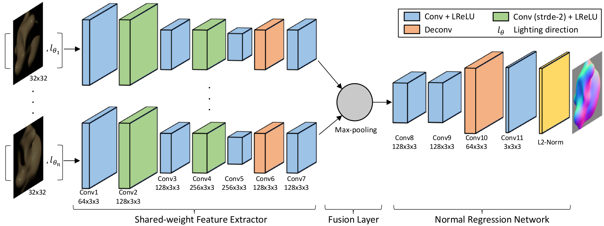
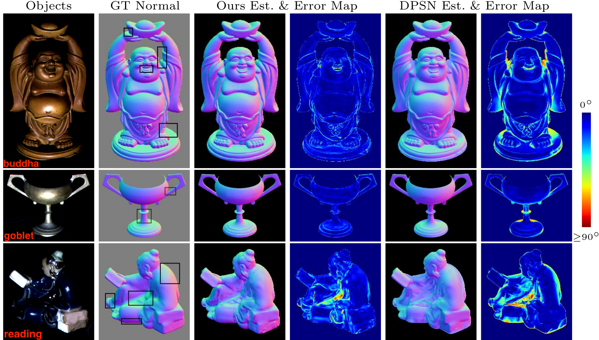
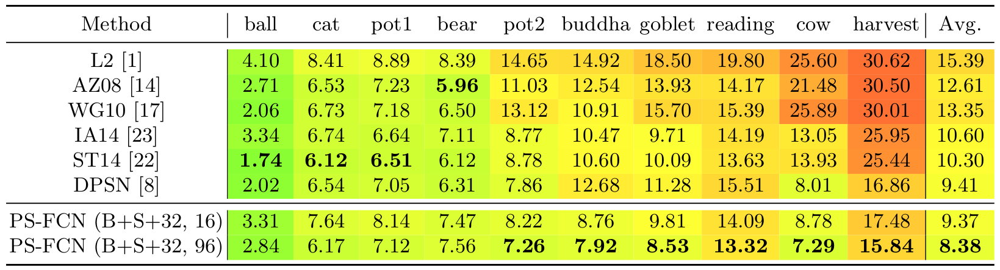
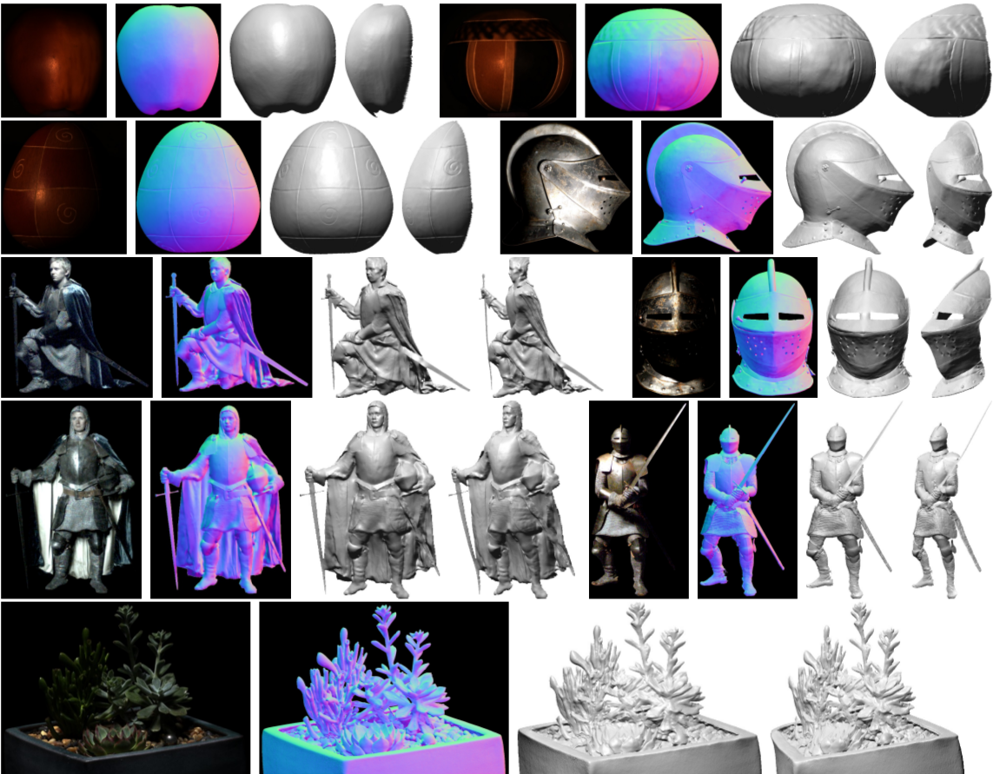

This paper addresses the problem of photometric stereo for non-Lambertian surfaces. Existing approaches often adopt simplified reflectance models to make the problem more tractable, but this greatly hinders their applications on real-world objects. In this paper, we propose a deep fully convolutional network, called PS-FCN, that takes an arbitrary number of images of a static object captured under different light directions with a fixed camera as input, and predicts a normal map of the object in a fast feed-forward pass. Unlike the recently proposed learning based method, PS-FCN does not require a pre-defined set of light directions during training and testing, and can handle multiple images and light directions in an order-agnostic manner. Although we train PS-FCN on synthetic data, it can generalize well to real datasets. We further show that PS-FCN can be easily extended to handle the problem of uncalibrated photometric stereo. Extensive experiments on public real datasets show that PS-FCN outperforms existing approaches in calibrated photometric stereo, and promising results are achieved in uncalibrated scenario, clearly demonstrating its effectiveness.
Method

Training Dataset
Results
Results on DiLiGenT Main Dataset.


Results on Gourd&Apple and Light Stage Data Gallery.

Code, models and datasets will be available soon.
Acknowledgments
We thank Hiroaki Santo for his help with the comparison to DPSN. We also thank Boxin Shi and Zhipeng Mo for their help with the evaluation on the DiLiGenT benchmark. We gratefully acknowledge the support of NVIDIA Corporation with the donation of the Titan X Pascal GPU used for this research. Kai Han is supported by EPSRC Programme Grant Seebibyte EP/M013774/1.